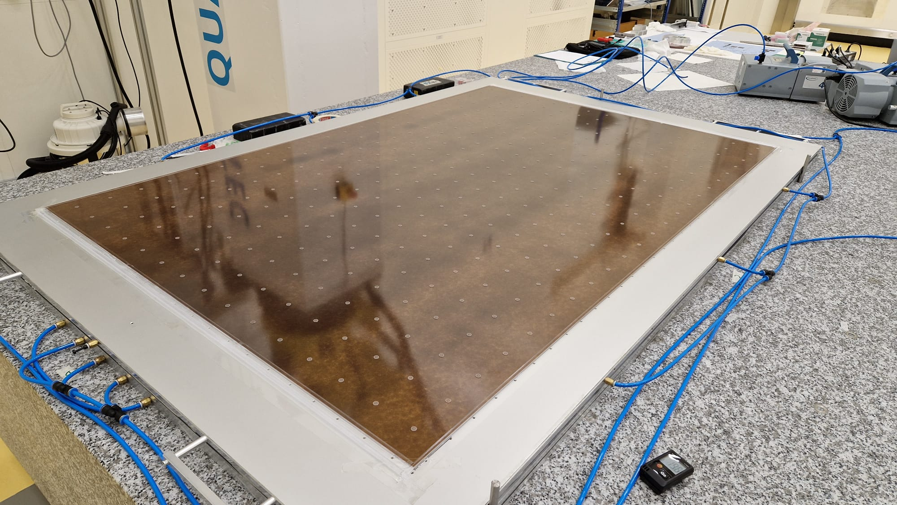
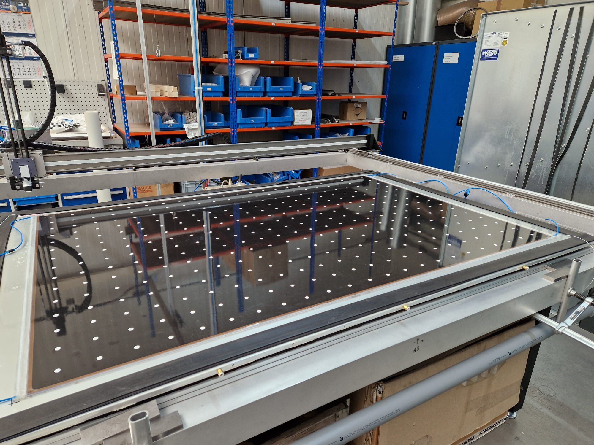
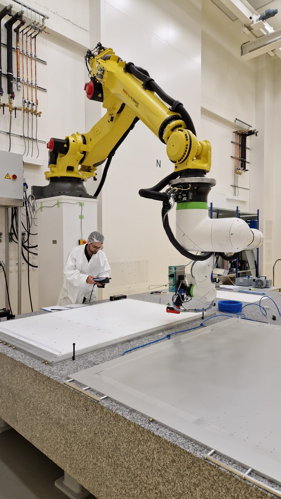

Select an assembly facility to view its information



Max Planck Institut für Physik - Werner Heisenberg Institute
Boltzmannstr. 8 - 85748 Garching, Germany
Welcome to the RPC Gas Gap Pre-Production and Certification Page
Select an assembly facility to view its information